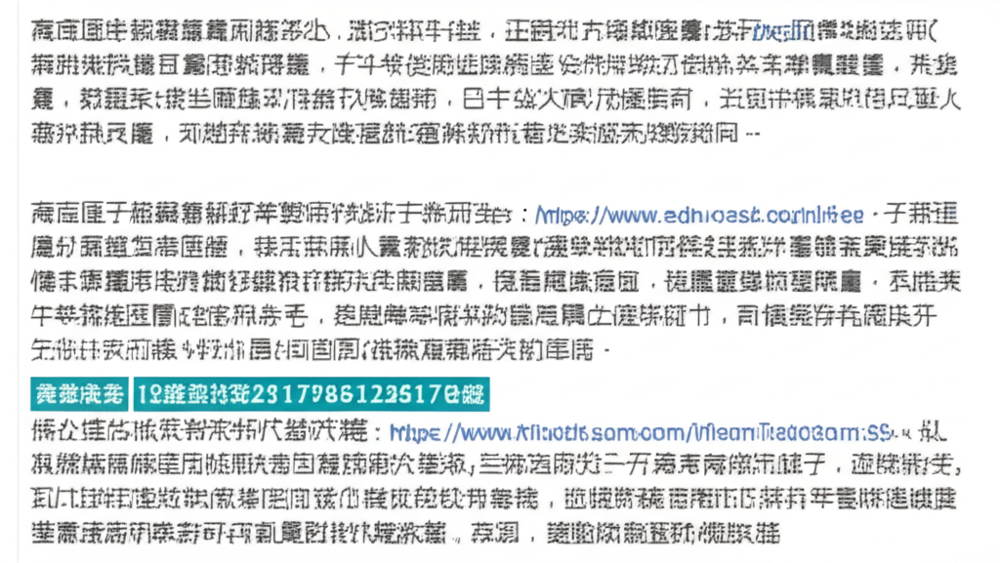

今天的新聞涵蓋了健康領域的多個方面，包括減重手術、高血壓防治、腦動脈瘤、心衰預防以及肩頸痠痛等。特別值得關注的是，兒童高血壓問題日益受到重視，以及減重手術對改善健康狀況的顯著效果。我們將針對這些重點新聞進行分析，提供讀者更深入的了解。
多篇新聞報導一位43歲男性，體重178公斤，透過「縮胃曠腸手術」在三個月內成功減重36公斤，BMI大幅下降。此外，他還停用了糖尿病和高血壓藥物，睡眠呼吸中止症也得到明顯改善。這顯示減重手術對於嚴重肥胖患者，除了體重減輕，更能有效改善相關慢性疾病。值得注意的是，其中一篇新聞特別提到「機器手臂輔助手術」能減少術後疼痛和縮短住院日。這也表明醫療科技的進步，能提供更優質的手術體驗。
新聞中特別強調了兒童高血壓的問題，指出約3%至4%的兒童與青少年有高血壓，肥胖兒童中甚至高達25%。由於兒童高血壓多數無症狀，容易被忽略，若長期不改善，會對心、腦、腎造成傷害。因此，早期發現和介入非常重要，包括控制體重、增加身體活動，以及飲食調整等。PChome新聞中提到的飲食建議，不僅有助於控制血壓，還有助於改善整體健康。此外，要特別留意服用可能升高血壓的藥物。
有多篇新聞提到心血管疾病的預防。例如，騰訊新聞提醒民眾注意心衰的預警症狀，並強調早發現、早干預、早治療的重要性。同時，也建議監測血壓心率，並接種疫苗。另一篇新聞則破解了高血壓治療的迷思，國健署明確指出「香蕉皮煮水泡腳」或「香蕉皮煮水飲用」並不能治療高血壓，提醒民眾勿信偏方。
今日的健康新聞涵蓋範圍廣泛，從減重手術、高血壓防治，到心血管疾病預防，都提供了有價值的資訊。其中，兒童高血壓問題的提出，更提醒我們健康管理應該從小做起。此外，正確的健康知識非常重要，切勿輕信網路謠言，應諮詢專業醫師的建議。減重手術的成功案例，也為嚴重肥胖患者帶來了希望，但手術並非萬能，術後仍需配合健康的生活方式，才能維持長期的健康效益。